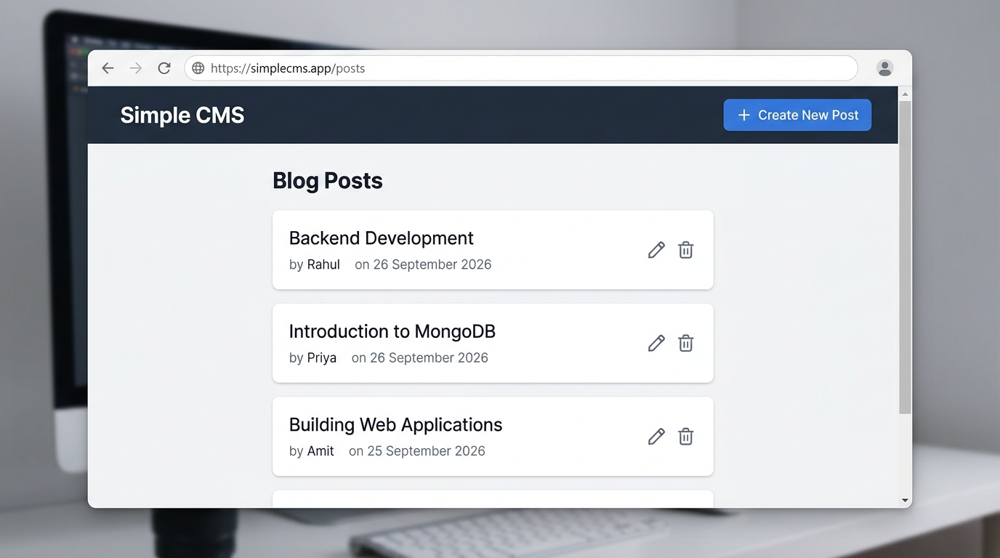

🎯 Objective
To develop a backend Content Management System using
Node.js and MongoDB and understand server-side application
development and database integration.
📌 Project Overview
This laboratory exercise demonstrates the development of a
Content Management System with a Node.js backend and MongoDB
database connectivity.
⚙️ Technologies Used
- Node.js
- JavaScript
- MongoDB
- npm
- Server-side Web Development
📂 Project Structure
cms-lab/
├── public/
├── views/
├── app.js
├── app.pure-mongo.js
├── package.json
├── package-lock.json
├── seed.js
├── README.md
└── screenshot.png
💻 Backend Implementation
The project contains multiple backend implementations.
The main server logic is contained in app.js, while
app.pure-mongo.js demonstrates MongoDB interaction.
The seed.js file is used for inserting initial data.
🚀 Running the Project
Install the required dependencies:
npm install
Run the application:
node app.js
Note: GitHub Pages hosts static content only.
The Node.js and MongoDB backend cannot execute directly on
GitHub Pages. This page presents the implementation and output
of the CMS project.
🖼️ Project Output
Screenshot of the implemented CMS application:

🎓 Learning Outcome
- Understood the architecture of a backend CMS.
- Worked with Node.js server-side development.
- Integrated MongoDB with a backend application.
- Used npm for dependency management.
- Worked with server-side views and public resources.
- Understood database seeding.
✅ Result
The Content Management System backend was successfully
implemented using Node.js and MongoDB.